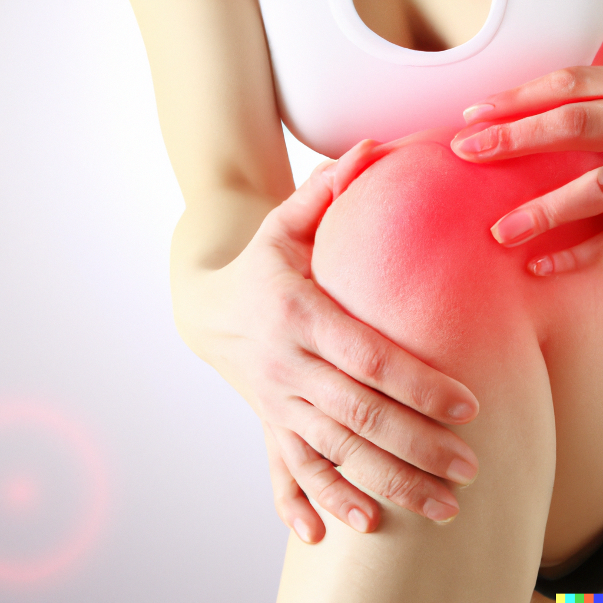

The Importance of Healing: 6 Key Components to Achieve Optimal Wellness
Introduction
This article will explore the significance of healing in our lives and how focusing on six key areas can lead to a healthier, happier, and more fulfilling life. By understanding the importance of healing and taking charge of our well-being, we can adopt a proactive approach to our health and live the best lives possible. Remember, our bodies are systems that are interconnected and reliant on each other. To take our healing practice even further, we will also optimize the following systems to create a harmonious and nurturing environment for our bodies.
This article will explore the significance of healing in our lives and how focusing on six key areas can lead to a healthier, happier, and more fulfilling life. By understanding the importance of healing and taking charge of our well-being, we can adopt a proactive approach to our health and live the best lives possible. Remember, our bodies are systems that are interconnected and reliant on each other. To take our healing practice even further, we will also optimize the following systems to create a harmonious and nurturing environment for our bodies.

-
Cardiovascular Health
A strong cardiovascular system is the cornerstone of a healthy lifestyle. Regular exercise, such as jogging, swimming, or participating in group fitness classes, can significantly improve heart health and circulation. Moreover, maintaining a balanced diet rich in fruits, vegetables, whole grains, and lean proteins is crucial for optimal cardiovascular functioning. Remember, a healthy heart is key to longevity and a higher quality of life.
-
Gut Health
Gut health plays a vital role in our overall well-being. A well-functioning digestive system ensures proper nutrient absorption and waste elimination. Incorporating probiotics and prebiotics, such as yogurt, kefir, and fiber-rich foods, into your diet can greatly improve gut health. Avoiding processed foods and consuming a variety of fresh, whole foods is essential for maintaining a healthy gut and preventing digestive issues.
-
Breathing
Breathing exercises are often overlooked but can have a profound impact on our mental and physical health. Practicing deep, mindful breathing techniques, such as those found in yoga and meditation, can help reduce stress, increase focus, and promote relaxation. By incorporating mindful breathing into your daily routine, you can better manage anxiety and stress while improving your overall well-being.
-
Mental Health
Our mental and emotional states are just as important as our physical health. To foster a healthy mindset, engage in activities that bring joy and satisfaction. Meditation, journaling, and spending time with loved ones can help cultivate a positive mental state. Seek professional help if you're struggling with depression, anxiety, or other mental health concerns. Remember, nurturing your mental health is essential for overall healing and growth.
-
Emotional States
Emotional well-being is closely tied to our mental and physical health. Practicing self-love and self-compassion, as well as setting boundaries with others, can significantly improve our emotional states. Engaging in creative outlets and hobbies that bring joy can also contribute to better emotional health. Remember, taking care of your emotional well-being is an integral part of healing and personal growth.
-
Personal Growth and Nurturing Weaknesses
Embracing personal growth and addressing weaknesses is essential for creating an environment suitable for healing. This includes acknowledging and addressing injuries or health concerns with the guidance of healthcare professionals. By focusing on self-improvement, we can better support our physical, mental, and emotional health, ultimately becoming more capable and available to participate in life with our friends and family.
Conclusion
In conclusion, healing is an essential aspect of living a healthy, fulfilled life. By focusing on the six key components discussed in this article - cardiovascular health, gut health, breathing, mental health, emotional states, and personal growth - we can create an environment that supports our overall well-being. Prioritizing self-care and nurturing our bodies, minds, and spirits allows us to freely express ourselves, engage with our loved ones, and live our lives to the fullest. Embrace the importance of healing, and discover the transformative power it can have on your life.